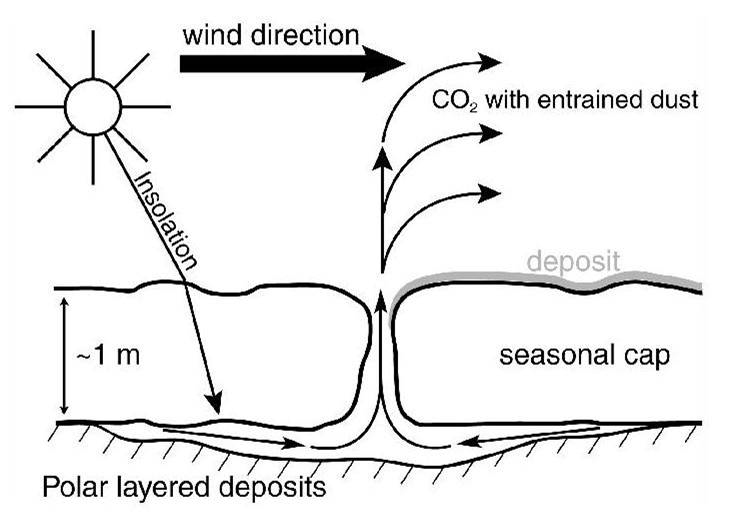
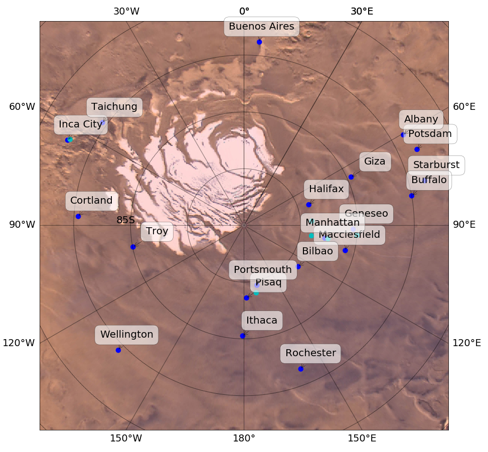
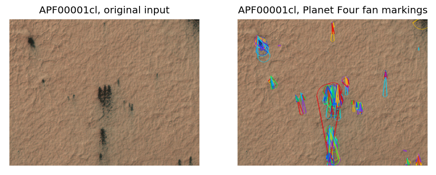
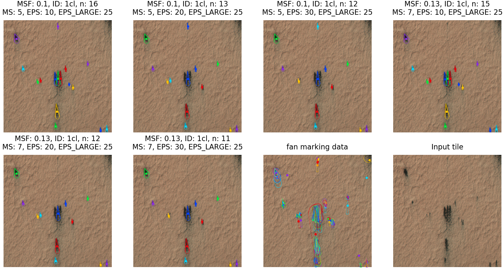
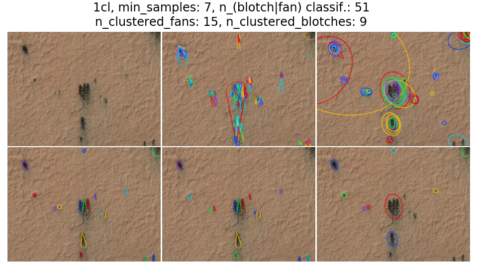
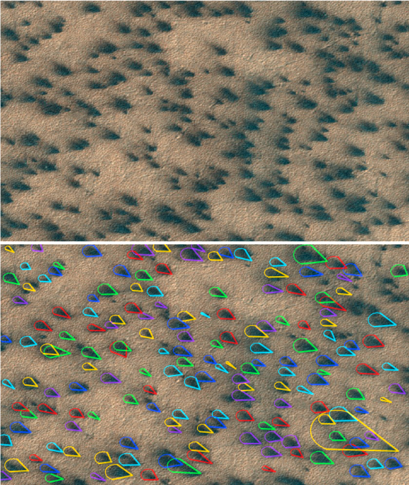
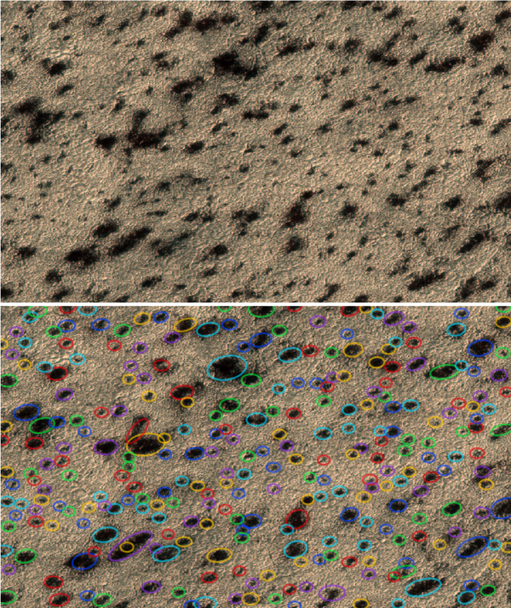
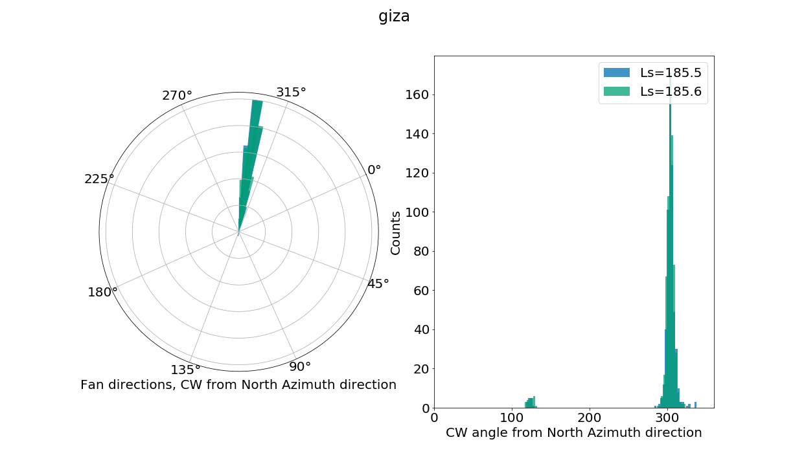
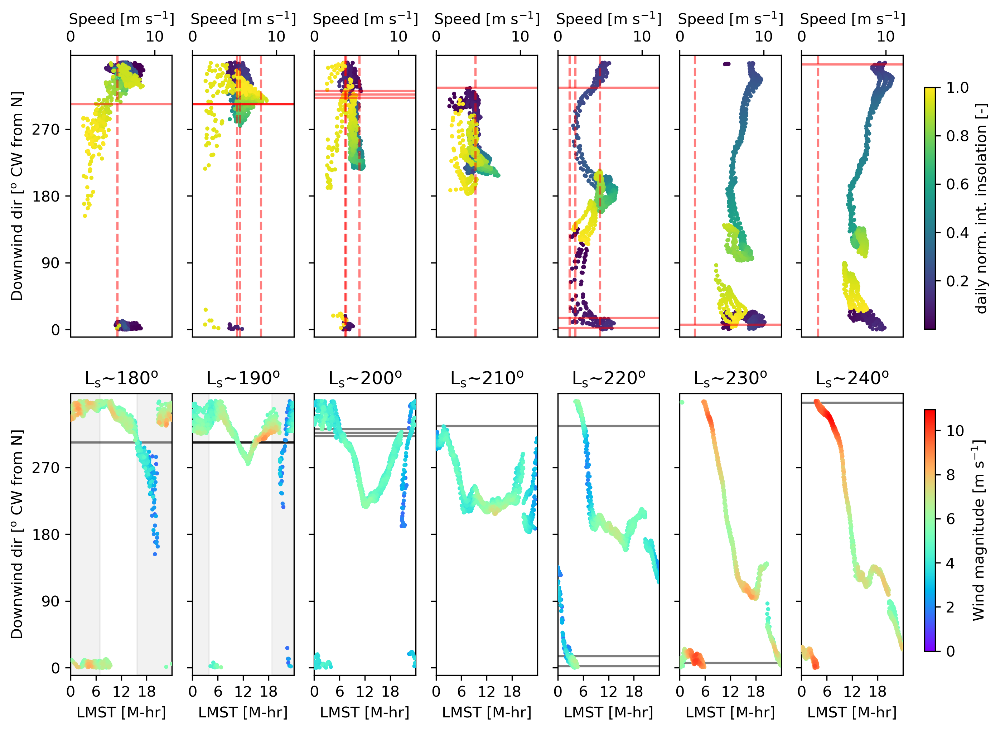

What is Citizen Science (CS)?
Political answer (Quotes EU Horizon monthly focus)
- “Through citizen science, ordinary people can take part in extraordinary research.”
- “Through their contributions, the citizen scientist can actively pursue personal values, and be part of a research community seeking the same goals.”
- “The professional scientist can get more data than they would otherwise. This leads to better precision in their measurements and more lines of enquiry in their research.”
- “Environmental monitoring is a particularly active field of citizen science.”
- “Scientists naturally want to measure the effects of citizen science and its impact on society […]” (Meta-CS)
What is CS, practically?
- Problem: Simple, but arduous or repetitive task
- too much data to go through yourself
- Split up the task into screen-sized subtasks
- Present the data with a simple workflow to thousands of untrained volunteers
What is in it for scientists?
- amount of data grows exponentially
- ideal for simple but arduous questions
- ML: labeled data always better
- CS is an efficient way to create many labels
- good outreach opportunity
What is in it for citizens?
- participate in real science
- independent of prior education!
- wide variety of research fields offered as CS now
Recognition of the field (US)
- https://science.nasa.gov/citizenscience
- Seed funding available through standard NASA funding programs
- Can be attached to larger project applications
Recognition of the field (EU)
EU Horizon monthly focus and semi-regularly CS news
https://ec.europa.eu/research-and-innovation/en/horizon-magazine/citizen-science-science-and-people
How did it start (really)
- Zooniverse really took off with “GalaxyZoo”
- Dozens of papers before planetary even started
- Galaxy shape distributions needed
redefinition!
Planet Four project
Science case
Science case temporal
Science case: Kieffer model

- Jet deposits are aligned by prevalent winds at the time!
- Mapping these features would be more wind data than we ever had on Mars!
Active areas around south pole

- Seasonal campaigns at most of these areas!
- -> Lots of huge HiRISE image data
Input data
- 221 HiRISE images from MY 29/30
- split up into over 40,000 image screen-sized tiles
- Tiles are being “anonymized”, to prevent bias
- The data input and reduction pipelines need to track everything
Interface
Interface return

Minimum of 30 different volunteers per image tile!
=> quite slow progress
Reduction pipeline

Reduction pipeline 2

Catalog entries
 
Science Team (Gold) markings
- Each team member marked several hundred tiles
- Significant differences between science team members
- Years of experience do not overcome the original contrast problem!
Compare experts with citizens

Results
- Over 40,000 citizens have contributed
- Most only once
- Core team of approx 10-20 volunteers did most of the work
- ca. 400,000 geo-located objects in catalog
- available at https://www.zooniverse.org/projects/mschwamb/planet-four/about/results
What can be done with it?

Compare with climate models
- Team member Tim Michaels nest GCM into high-res meso-scale models using CTX and HiRISE DTM topography
- Run for several days to avoid “spin-up” effects
- Run at different \(L_s\) over the season
- Compare wind predictions with Planet Four data
- Just published in Portyankina et al. (2022)

Measure of success
- Define status of good / average / bad fit with data
- Using only direction very good match with climate models
- Taking into account wind strength as well less good
- Our assumptions for jet deposit <-> wind strength are too simple
Only wind directions
Wind directions and estimated strengths
Conclusions
- Citizen Science is not only outreach
- Scientific paradigms are being changed thanks to the work power of hundred thousands of citizen scientists all over the world
- If data reduction is done carefully, the results are very reliable
- Don’t try to do this “on the side”
- It’s a full time analytical job
Conclusions 2
- Overall good match with models but discrepancies exist
- Hope to derive jet eruption times
References
Aye, K-Michael, Megan E Schwamb, Ganna Portyankina, Candice J Hansen, Adam McMaster, Grant R M Miller, Brian Carstensen, et al. 2019. “Planet Four: Probing Springtime Winds on Mars by Mapping the Southern Polar CO2 Jet Deposits.” Icarus 319 (February): 558–98. https://doi.org/10.1016/j.icarus.2018.08.018.
Portyankina, Ganna, Timothy I Michaels, Klaus-Michael Aye, Megan E Schwamb, Candice J Hansen, and Chris J Lintott. 2022. “Planet Four: Derived South Polar Martian Winds Interpreted Using Mesoscale Modeling.” Planet. Sci. J. 3 (2): 31. https://doi.org/10.3847/PSJ/ac3087.